Only_attr
▼Varying_only_Tails (MvStudentT, nu, 4 runs)
Pooled Chains results
Mean Rmse
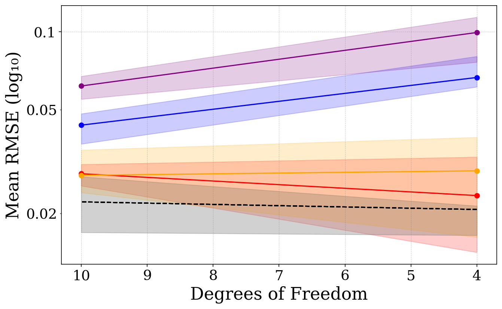
Sampler vs IID stats
| Sampler | Varying | t-stat | p-value | Glass Δ |
|---|---|---|---|---|
| DEMetro_Z | 4 | 4.048 | 0.023 | 9.666 |
| DEMetro_Z | 10 | 4.005 | 0.00708 | 2.831 |
| Metro | 4 | 5.165 | 0.00783 | 7.601 |
| Metro | 10 | 2.055 | 0.0857 | 1.426 |
| HMC | 4 | 0.945 | 0.387 | 0.862 |
| HMC | 10 | 0.701 | 0.515 | 0.412 |
| SMC | 4 | 0.988 | 0.377 | 1.204 |
| SMC | 10 | 0.794 | 0.459 | 0.643 |
Sampler vs Sampler stats
| Sampler Pair | Varying | t-stat | p-value | Cohen’s d |
|---|---|---|---|---|
| HMC_vs_SMC | 0 | -0.235 | 0.829 | -0.117 |
| HMC_vs_SMC | 1 | -0.440 | 0.69 | -0.220 |
| HMC_vs_DEMetro_Z | 0 | -3.961 | 0.0287 | -1.980 |
| HMC_vs_DEMetro_Z | 1 | -3.845 | 0.031 | -1.923 |
| DEMetro_Z_vs_SMC | 0 | 3.547 | 0.0382 | 1.773 |
| DEMetro_Z_vs_SMC | 1 | 2.332 | 0.102 | 1.166 |
| HMC_vs_Metro | 0 | -3.299 | 0.0458 | -1.649 |
| HMC_vs_Metro | 1 | -1.473 | 0.237 | -0.736 |
| Metro_vs_DEMetro_Z | 0 | -0.581 | 0.602 | -0.290 |
| Metro_vs_DEMetro_Z | 1 | -1.801 | 0.17 | -0.900 |
| Metro_vs_SMC | 0 | 3.420 | 0.0418 | 1.710 |
| Metro_vs_SMC | 1 | 0.736 | 0.515 | 0.368 |
Mean Rmse (scatter)
Glass’s Δ Mean RMSE
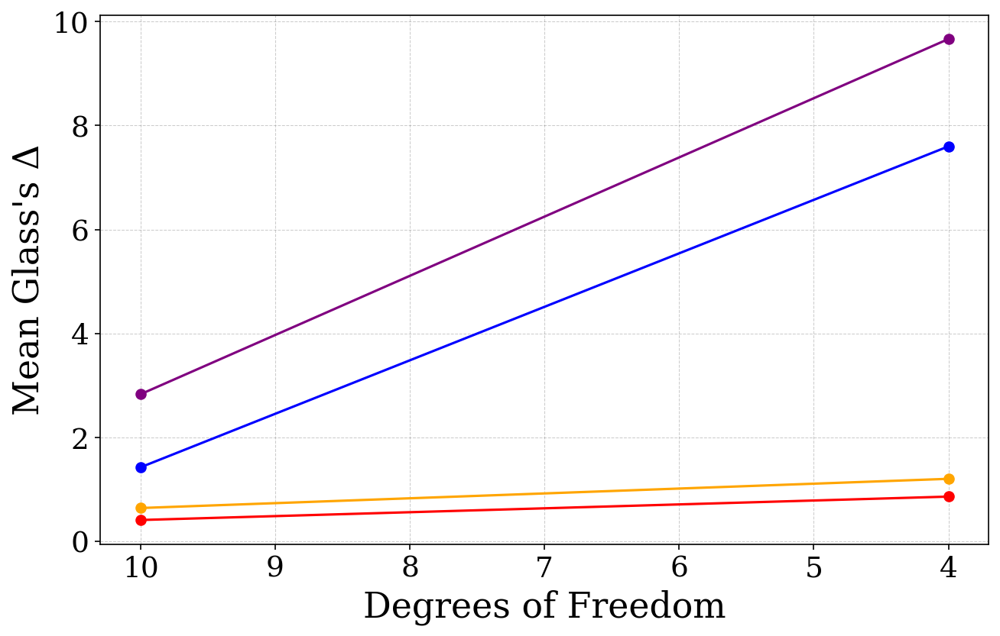
Glass’s Δ table
| Sampler | Varying | MCMC Mean | IID Mean | IID Std | Glass’s Δ |
|---|---|---|---|---|---|
| DEMetro_Z | 4 | 0.091 | 0.017 | 0.008 | 9.666 |
| DEMetro_Z | 10 | 0.061 | 0.022 | 0.013 | 2.831 |
| Metro | 4 | 0.075 | 0.017 | 0.008 | 7.601 |
| Metro | 10 | 0.042 | 0.022 | 0.013 | 1.426 |
| HMC | 4 | 0.024 | 0.017 | 0.008 | 0.862 |
| HMC | 10 | 0.028 | 0.022 | 0.013 | 0.412 |
| SMC | 4 | 0.026 | 0.017 | 0.008 | 1.204 |
| SMC | 10 | 0.031 | 0.022 | 0.013 | 0.643 |
Var Rmse
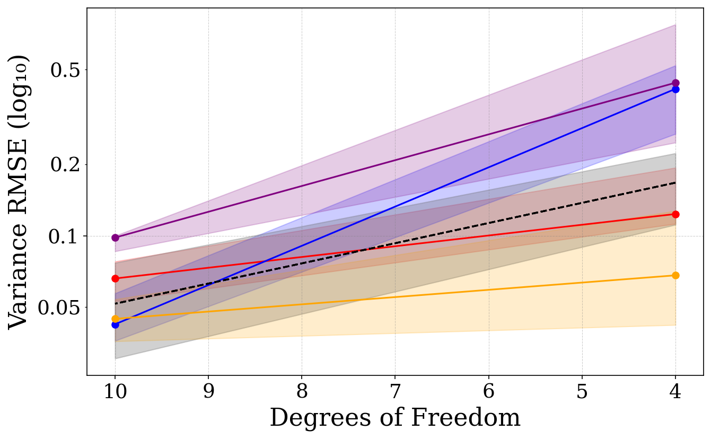
Sampler vs IID stats
| Sampler | Varying | t-stat | p-value | Glass Δ |
|---|---|---|---|---|
| DEMetro_Z | 4 | 1.533 | 0.22 | 5.680 |
| DEMetro_Z | 10 | 1.645 | 0.155 | 1.023 |
| Metro | 4 | 2.093 | 0.106 | 2.843 |
| Metro | 10 | -0.214 | 0.837 | -0.149 |
| HMC | 4 | 0.208 | 0.844 | 0.216 |
| HMC | 10 | 0.442 | 0.674 | 0.293 |
| SMC | 4 | -1.071 | 0.329 | -0.893 |
| SMC | 10 | -0.529 | 0.618 | -0.330 |
Sampler vs Sampler stats
| Sampler Pair | Varying | t-stat | p-value | Cohen’s d |
|---|---|---|---|---|
| DEMetro_Z_vs_SMC | 0 | 2.185 | 0.117 | 1.092 |
| DEMetro_Z_vs_SMC | 1 | 5.845 | 0.00998 | 2.923 |
| Metro_vs_SMC | 0 | 3.138 | 0.0517 | 1.569 |
| Metro_vs_SMC | 1 | 0.227 | 0.835 | 0.113 |
| Metro_vs_DEMetro_Z | 0 | -0.813 | 0.476 | -0.406 |
| Metro_vs_DEMetro_Z | 1 | -1.385 | 0.26 | -0.693 |
| HMC_vs_SMC | 0 | 3.553 | 0.038 | 1.777 |
| HMC_vs_SMC | 1 | 0.900 | 0.434 | 0.450 |
| HMC_vs_DEMetro_Z | 0 | -1.926 | 0.15 | -0.963 |
| HMC_vs_DEMetro_Z | 1 | -0.978 | 0.4 | -0.489 |
| HMC_vs_Metro | 0 | -2.484 | 0.089 | -1.242 |
| HMC_vs_Metro | 1 | 1.052 | 0.37 | 0.526 |
Var Rmse (scatter)
Glass’s Δ Variance RMSE
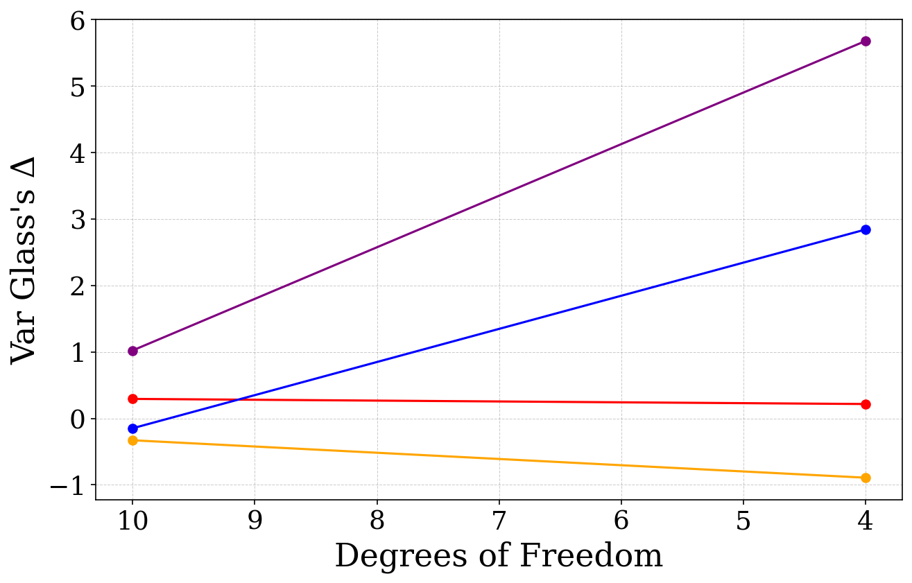
Glass’s Δ table
| Sampler | Varying | MCMC Mean | IID Mean | IID Std | Glass’s Δ |
|---|---|---|---|---|---|
| DEMetro_Z | 4 | 0.580 | 0.166 | 0.073 | 5.680 |
| DEMetro_Z | 10 | 0.088 | 0.056 | 0.031 | 1.023 |
| Metro | 4 | 0.373 | 0.166 | 0.073 | 2.843 |
| Metro | 10 | 0.051 | 0.056 | 0.031 | -0.149 |
| HMC | 4 | 0.182 | 0.166 | 0.073 | 0.216 |
| HMC | 10 | 0.065 | 0.056 | 0.031 | 0.293 |
| SMC | 4 | 0.101 | 0.166 | 0.073 | -0.893 |
| SMC | 10 | 0.045 | 0.056 | 0.031 | -0.330 |
Wasserstein Distance

Sampler vs IID stats
| Sampler | Varying | t-stat | p-value | Glass Δ |
|---|---|---|---|---|
| DEMetro_Z | 4 | 2.682 | 0.0736 | 15.090 |
| DEMetro_Z | 10 | 5.230 | 0.00223 | 4.162 |
| Metro | 4 | 4.587 | 0.0141 | 8.517 |
| Metro | 10 | 2.160 | 0.0752 | 1.666 |
| HMC | 4 | 0.267 | 0.803 | 0.143 |
| HMC | 10 | 0.984 | 0.391 | 0.506 |
| SMC | 4 | 0.168 | 0.874 | 0.180 |
| SMC | 10 | 0.713 | 0.503 | 0.526 |
Sampler vs Sampler stats
| Sampler Pair | Varying | t-stat | p-value | Cohen’s d |
|---|---|---|---|---|
| Metro_vs_SMC | 0 | 3.728 | 0.0336 | 1.864 |
| Metro_vs_SMC | 1 | 1.233 | 0.305 | 0.617 |
| DEMetro_Z_vs_SMC | 0 | 3.145 | 0.0515 | 1.572 |
| DEMetro_Z_vs_SMC | 1 | 3.763 | 0.0328 | 1.881 |
| HMC_vs_DEMetro_Z | 0 | -2.699 | 0.0738 | -1.350 |
| HMC_vs_DEMetro_Z | 1 | -6.764 | 0.0066 | -3.382 |
| HMC_vs_SMC | 0 | -0.042 | 0.969 | -0.021 |
| HMC_vs_SMC | 1 | -0.035 | 0.975 | -0.017 |
| HMC_vs_Metro | 0 | -4.244 | 0.024 | -2.122 |
| HMC_vs_Metro | 1 | -1.731 | 0.182 | -0.865 |
| Metro_vs_DEMetro_Z | 0 | -1.082 | 0.358 | -0.541 |
| Metro_vs_DEMetro_Z | 1 | -2.220 | 0.113 | -1.110 |
Wasserstein Distance (scatter)
Glass’s Δ WS
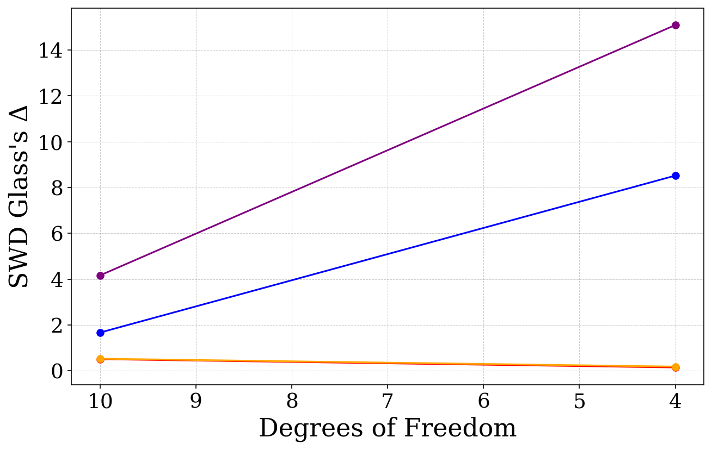
Glass’s Δ table
| Sampler | Varying | MCMC Mean | IID Mean | IID Std | Glass’s Δ |
|---|---|---|---|---|---|
| DEMetro_Z | 4 | 0.133 | 0.043 | 0.006 | 15.090 |
| DEMetro_Z | 10 | 0.075 | 0.034 | 0.010 | 4.162 |
| Metro | 4 | 0.094 | 0.043 | 0.006 | 8.517 |
| Metro | 10 | 0.051 | 0.034 | 0.010 | 1.666 |
| HMC | 4 | 0.044 | 0.043 | 0.006 | 0.143 |
| HMC | 10 | 0.039 | 0.034 | 0.010 | 0.506 |
| SMC | 4 | 0.044 | 0.043 | 0.006 | 0.180 |
| SMC | 10 | 0.039 | 0.034 | 0.010 | 0.526 |
Mmd Rff

Sampler vs IID stats
| Sampler | Varying | t-stat | p-value | Glass Δ |
|---|---|---|---|---|
| DEMetro_Z | 4 | 2.419 | 0.0857 | 5.280 |
| DEMetro_Z | 10 | 3.826 | 0.0145 | 4.055 |
| Metro | 4 | 4.520 | 0.00489 | 2.816 |
| Metro | 10 | 1.810 | 0.121 | 1.193 |
| HMC | 4 | -0.450 | 0.669 | -0.288 |
| HMC | 10 | 1.010 | 0.365 | 0.563 |
| SMC | 4 | 0.353 | 0.736 | 0.234 |
| SMC | 10 | 0.838 | 0.436 | 0.689 |
Sampler vs Sampler stats
| Sampler Pair | Varying | t-stat | p-value | Cohen’s d |
|---|---|---|---|---|
| Metro_vs_SMC | 0 | 7.500 | 0.00491 | 3.750 |
| Metro_vs_SMC | 1 | 0.547 | 0.622 | 0.273 |
| DEMetro_Z_vs_SMC | 0 | 2.868 | 0.0641 | 1.434 |
| DEMetro_Z_vs_SMC | 1 | 2.829 | 0.0663 | 1.414 |
| HMC_vs_DEMetro_Z | 0 | -2.299 | 0.105 | -1.150 |
| HMC_vs_DEMetro_Z | 1 | -3.838 | 0.0312 | -1.919 |
| HMC_vs_Metro | 0 | -5.465 | 0.012 | -2.733 |
| HMC_vs_Metro | 1 | -1.005 | 0.389 | -0.502 |
| Metro_vs_DEMetro_Z | 0 | -1.320 | 0.279 | -0.660 |
| Metro_vs_DEMetro_Z | 1 | -2.229 | 0.112 | -1.115 |
| HMC_vs_SMC | 0 | -0.668 | 0.552 | -0.334 |
| HMC_vs_SMC | 1 | -0.190 | 0.861 | -0.095 |
Mmd Rff (scatter)
Glass’s Δ MMD-RFF
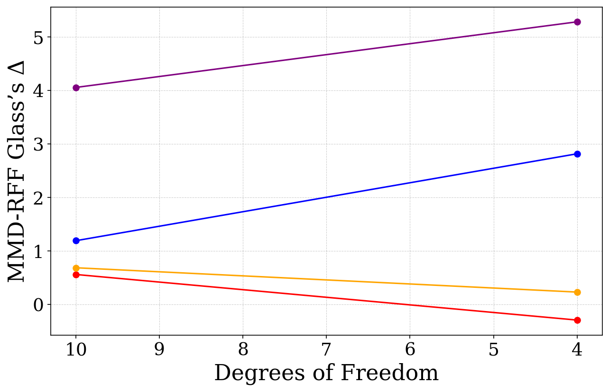
Glass’s Δ table
| Sampler | Varying | MCMC Mean | IID Mean | IID Std | Glass’s Δ |
|---|---|---|---|---|---|
| DEMetro_Z | 4 | 0.036 | 0.012 | 0.005 | 5.280 |
| DEMetro_Z | 10 | 0.035 | 0.013 | 0.006 | 4.055 |
| Metro | 4 | 0.025 | 0.012 | 0.005 | 2.816 |
| Metro | 10 | 0.019 | 0.013 | 0.006 | 1.193 |
| HMC | 4 | 0.011 | 0.012 | 0.005 | -0.288 |
| HMC | 10 | 0.016 | 0.013 | 0.006 | 0.563 |
| SMC | 4 | 0.013 | 0.012 | 0.005 | 0.234 |
| SMC | 10 | 0.017 | 0.013 | 0.006 | 0.689 |
Runtime
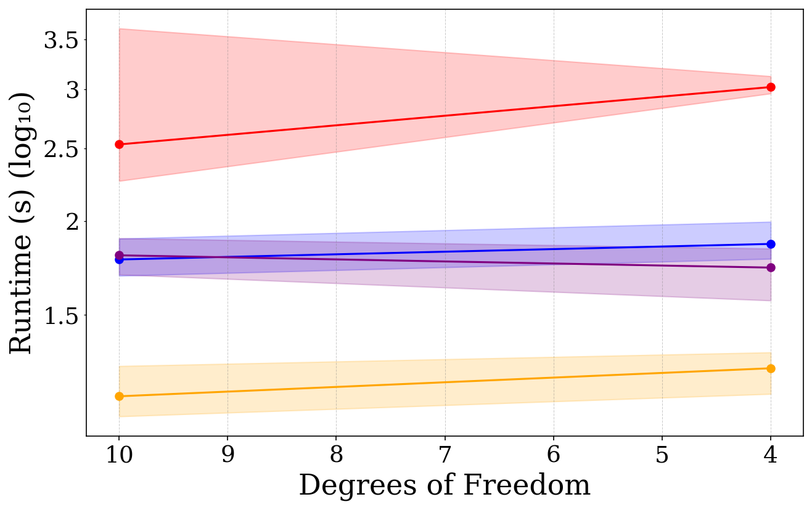
Runtime (scatter)
Ess
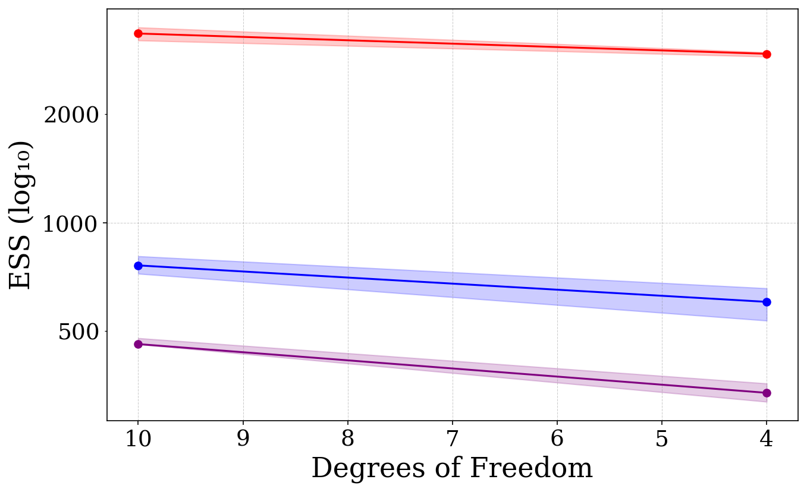
Ess (scatter)
Ess Per Sec
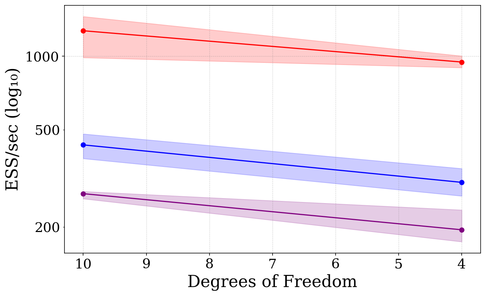
Ess Per Sec (scatter)
R Hat
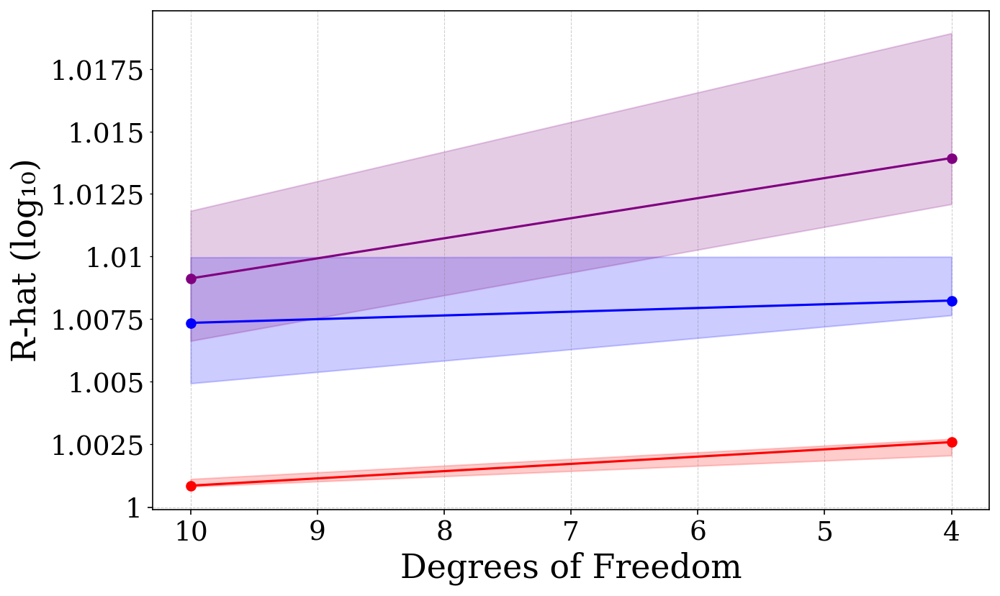
R Hat (scatter)
Mode Transitions

One Chain results
Mean Rmse
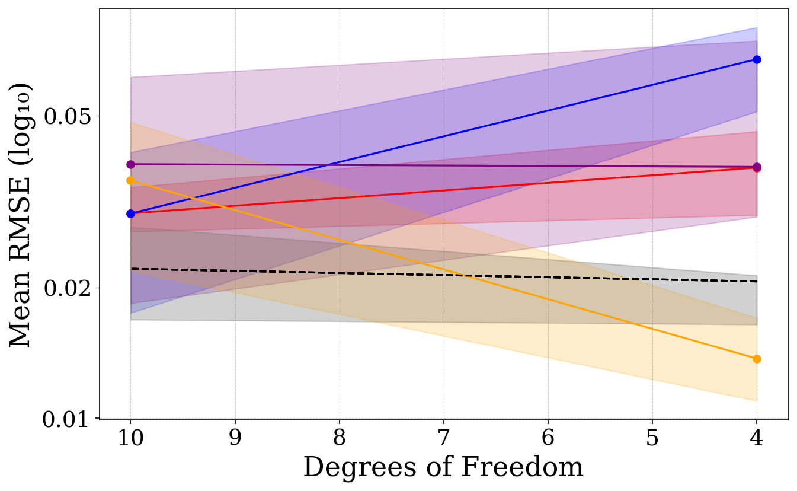
Sampler vs IID stats
| Sampler | Varying | t-stat | p-value | Glass Δ |
|---|---|---|---|---|
| DEMetro_Z | 4 | 1.285 | 0.287 | 6.370 |
| DEMetro_Z | 10 | 1.056 | 0.351 | 1.395 |
| Metro | 4 | 3.936 | 0.0199 | 6.104 |
| Metro | 10 | 0.597 | 0.574 | 0.487 |
| HMC | 4 | 3.152 | 0.0224 | 2.682 |
| HMC | 10 | 1.093 | 0.321 | 0.668 |
| SMC | 4 | -0.619 | 0.562 | -0.374 |
| SMC | 10 | 1.118 | 0.309 | 0.917 |
Sampler vs Sampler stats
| Sampler Pair | Varying | t-stat | p-value | Cohen’s d |
|---|---|---|---|---|
| HMC_vs_SMC | 0 | 3.606 | 0.0366 | 1.803 |
| HMC_vs_SMC | 1 | -0.487 | 0.66 | -0.244 |
| HMC_vs_DEMetro_Z | 0 | -0.691 | 0.539 | -0.345 |
| HMC_vs_DEMetro_Z | 1 | -0.684 | 0.543 | -0.342 |
| DEMetro_Z_vs_SMC | 0 | 1.458 | 0.241 | 0.729 |
| DEMetro_Z_vs_SMC | 1 | 0.319 | 0.771 | 0.159 |
| HMC_vs_Metro | 0 | -4.073 | 0.0267 | -2.037 |
| HMC_vs_Metro | 1 | 0.499 | 0.652 | 0.249 |
| Metro_vs_DEMetro_Z | 0 | -0.044 | 0.968 | -0.022 |
| Metro_vs_DEMetro_Z | 1 | -1.235 | 0.305 | -0.618 |
| Metro_vs_SMC | 0 | 3.934 | 0.0292 | 1.967 |
| Metro_vs_SMC | 1 | -0.546 | 0.623 | -0.273 |
Mean Rmse (scatter)
Glass’s Δ Mean RMSE
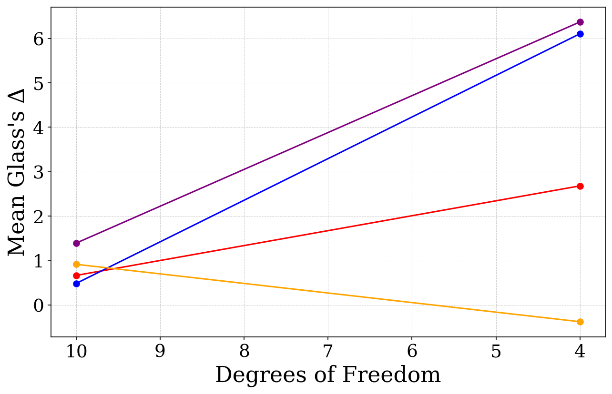
Glass’s Δ table
| Sampler | Varying | MCMC Mean | IID Mean | IID Std | Glass’s Δ |
|---|---|---|---|---|---|
| DEMetro_Z | 4 | 0.066 | 0.017 | 0.008 | 6.370 |
| DEMetro_Z | 10 | 0.041 | 0.022 | 0.013 | 1.395 |
| Metro | 4 | 0.064 | 0.017 | 0.008 | 6.104 |
| Metro | 10 | 0.029 | 0.022 | 0.013 | 0.487 |
| HMC | 4 | 0.038 | 0.017 | 0.008 | 2.682 |
| HMC | 10 | 0.031 | 0.022 | 0.013 | 0.668 |
| SMC | 4 | 0.014 | 0.017 | 0.008 | -0.374 |
| SMC | 10 | 0.035 | 0.022 | 0.013 | 0.917 |
Var Rmse
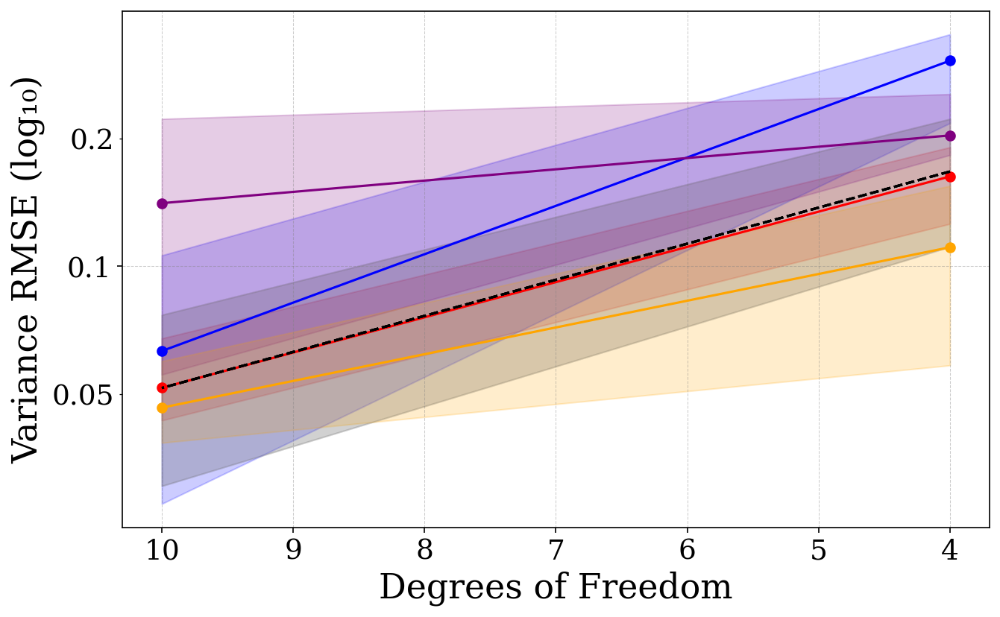
Sampler vs IID stats
| Sampler | Varying | t-stat | p-value | Glass Δ |
|---|---|---|---|---|
| DEMetro_Z | 4 | 1.145 | 0.298 | 0.924 |
| DEMetro_Z | 10 | 1.562 | 0.201 | 2.596 |
| Metro | 4 | 1.109 | 0.327 | 1.339 |
| Metro | 10 | 0.491 | 0.645 | 0.476 |
| HMC | 4 | -0.282 | 0.789 | -0.171 |
| HMC | 10 | 0.181 | 0.863 | 0.118 |
| SMC | 4 | -1.257 | 0.256 | -0.878 |
| SMC | 10 | -0.202 | 0.848 | -0.122 |
Sampler vs Sampler stats
| Sampler Pair | Varying | t-stat | p-value | Cohen’s d |
|---|---|---|---|---|
| DEMetro_Z_vs_SMC | 0 | 3.296 | 0.0459 | 1.648 |
| DEMetro_Z_vs_SMC | 1 | 1.772 | 0.175 | 0.886 |
| Metro_vs_SMC | 0 | 1.720 | 0.184 | 0.860 |
| Metro_vs_SMC | 1 | 0.616 | 0.581 | 0.308 |
| Metro_vs_DEMetro_Z | 0 | 0.476 | 0.666 | 0.238 |
| Metro_vs_DEMetro_Z | 1 | -0.881 | 0.443 | -0.441 |
| HMC_vs_SMC | 0 | 1.215 | 0.311 | 0.608 |
| HMC_vs_SMC | 1 | 0.331 | 0.762 | 0.165 |
| HMC_vs_DEMetro_Z | 0 | -1.964 | 0.144 | -0.982 |
| HMC_vs_DEMetro_Z | 1 | -1.663 | 0.195 | -0.831 |
| HMC_vs_Metro | 0 | -1.818 | 0.167 | -0.909 |
| HMC_vs_Metro | 1 | -0.340 | 0.757 | -0.170 |
Var Rmse (scatter)
Glass’s Δ Variance RMSE
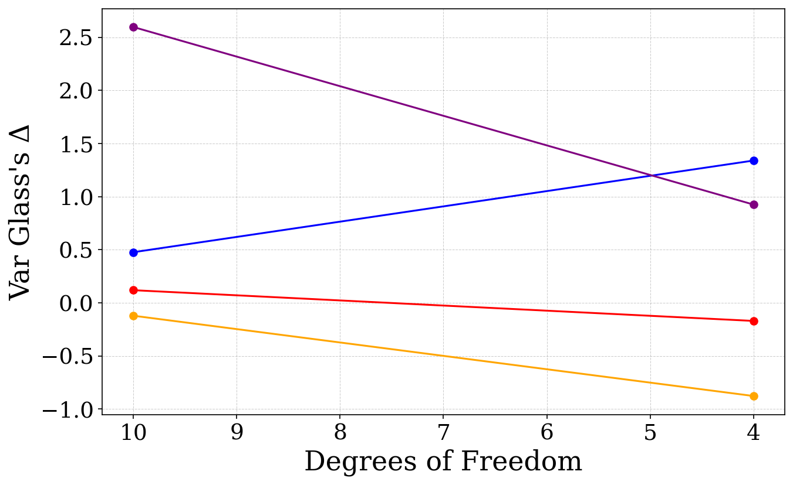
Glass’s Δ table
| Sampler | Varying | MCMC Mean | IID Mean | IID Std | Glass’s Δ |
|---|---|---|---|---|---|
| DEMetro_Z | 4 | 0.234 | 0.166 | 0.073 | 0.924 |
| DEMetro_Z | 10 | 0.137 | 0.056 | 0.031 | 2.596 |
| Metro | 4 | 0.264 | 0.166 | 0.073 | 1.339 |
| Metro | 10 | 0.071 | 0.056 | 0.031 | 0.476 |
| HMC | 4 | 0.154 | 0.166 | 0.073 | -0.171 |
| HMC | 10 | 0.059 | 0.056 | 0.031 | 0.118 |
| SMC | 4 | 0.102 | 0.166 | 0.073 | -0.878 |
| SMC | 10 | 0.052 | 0.056 | 0.031 | -0.122 |
Wasserstein Distance

Sampler vs IID stats
| Sampler | Varying | t-stat | p-value | Glass Δ |
|---|---|---|---|---|
| DEMetro_Z | 4 | 2.008 | 0.136 | 10.067 |
| DEMetro_Z | 10 | 4.818 | 0.0031 | 3.665 |
| Metro | 4 | 3.794 | 0.0247 | 6.951 |
| Metro | 10 | 2.124 | 0.0786 | 1.606 |
| HMC | 4 | 2.542 | 0.0582 | 2.844 |
| HMC | 10 | 1.345 | 0.229 | 0.874 |
| SMC | 4 | 0.410 | 0.697 | 0.313 |
| SMC | 10 | 1.208 | 0.273 | 0.830 |
Sampler vs Sampler stats
| Sampler Pair | Varying | t-stat | p-value | Cohen’s d |
|---|---|---|---|---|
| Metro_vs_SMC | 0 | 3.259 | 0.0472 | 1.629 |
| Metro_vs_SMC | 1 | 1.176 | 0.325 | 0.588 |
| DEMetro_Z_vs_SMC | 0 | 2.191 | 0.116 | 1.096 |
| DEMetro_Z_vs_SMC | 1 | 2.914 | 0.0618 | 1.457 |
| HMC_vs_DEMetro_Z | 0 | -1.546 | 0.22 | -0.773 |
| HMC_vs_DEMetro_Z | 1 | -3.468 | 0.0404 | -1.734 |
| HMC_vs_SMC | 0 | 3.112 | 0.0528 | 1.556 |
| HMC_vs_SMC | 1 | 0.128 | 0.906 | 0.064 |
| HMC_vs_Metro | 0 | -2.802 | 0.0677 | -1.401 |
| HMC_vs_Metro | 1 | -1.359 | 0.267 | -0.679 |
| Metro_vs_DEMetro_Z | 0 | -0.517 | 0.641 | -0.259 |
| Metro_vs_DEMetro_Z | 1 | -2.034 | 0.135 | -1.017 |
Wasserstein Distance (scatter)
Glass’s Δ WS
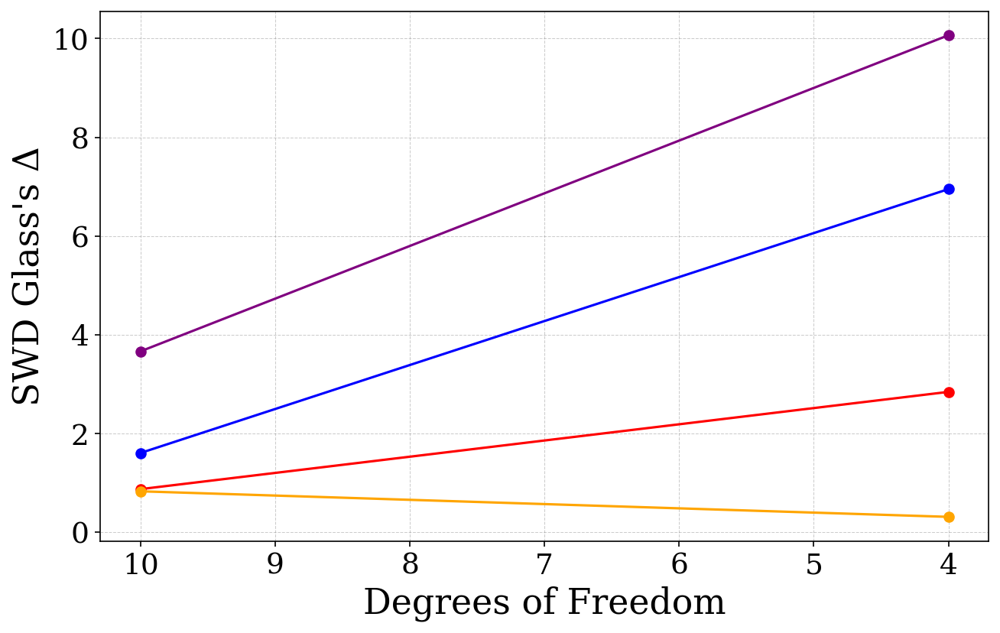
Glass’s Δ table
| Sampler | Varying | MCMC Mean | IID Mean | IID Std | Glass’s Δ |
|---|---|---|---|---|---|
| DEMetro_Z | 4 | 0.103 | 0.043 | 0.006 | 10.067 |
| DEMetro_Z | 10 | 0.070 | 0.034 | 0.010 | 3.665 |
| Metro | 4 | 0.084 | 0.043 | 0.006 | 6.951 |
| Metro | 10 | 0.050 | 0.034 | 0.010 | 1.606 |
| HMC | 4 | 0.060 | 0.043 | 0.006 | 2.844 |
| HMC | 10 | 0.043 | 0.034 | 0.010 | 0.874 |
| SMC | 4 | 0.045 | 0.043 | 0.006 | 0.313 |
| SMC | 10 | 0.042 | 0.034 | 0.010 | 0.830 |
Mmd Rff
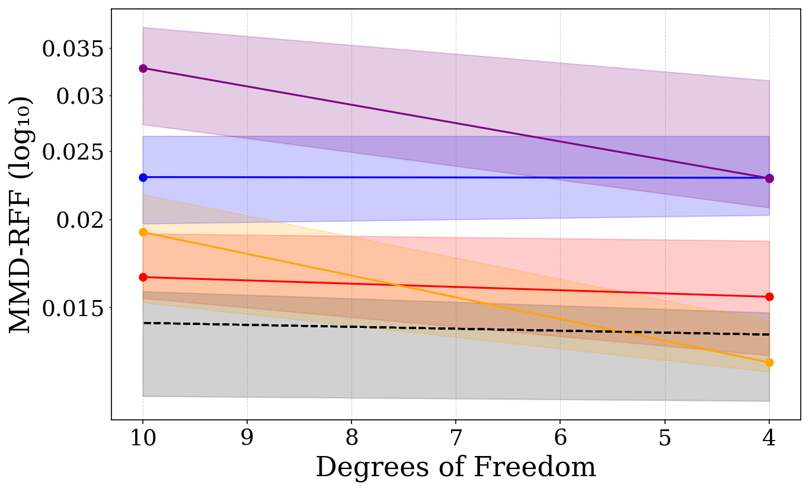
Sampler vs IID stats
| Sampler | Varying | t-stat | p-value | Glass Δ |
|---|---|---|---|---|
| DEMetro_Z | 4 | 2.153 | 0.107 | 3.826 |
| DEMetro_Z | 10 | 3.066 | 0.0333 | 3.478 |
| Metro | 4 | 3.077 | 0.0238 | 2.549 |
| Metro | 10 | 2.739 | 0.034 | 1.859 |
| HMC | 4 | 1.215 | 0.27 | 0.854 |
| HMC | 10 | 1.558 | 0.176 | 0.947 |
| SMC | 4 | 0.636 | 0.549 | 0.417 |
| SMC | 10 | 1.263 | 0.254 | 0.906 |
Sampler vs Sampler stats
| Sampler Pair | Varying | t-stat | p-value | Cohen’s d |
|---|---|---|---|---|
| Metro_vs_SMC | 0 | 2.143 | 0.122 | 1.072 |
| Metro_vs_SMC | 1 | 1.230 | 0.306 | 0.615 |
| DEMetro_Z_vs_SMC | 0 | 2.609 | 0.0798 | 1.304 |
| DEMetro_Z_vs_SMC | 1 | 1.805 | 0.169 | 0.903 |
| HMC_vs_DEMetro_Z | 0 | -1.809 | 0.168 | -0.905 |
| HMC_vs_DEMetro_Z | 1 | -2.315 | 0.104 | -1.158 |
| HMC_vs_Metro | 0 | -2.799 | 0.0679 | -1.400 |
| HMC_vs_Metro | 1 | -1.275 | 0.292 | -0.638 |
| Metro_vs_DEMetro_Z | 0 | -0.577 | 0.604 | -0.289 |
| Metro_vs_DEMetro_Z | 1 | -1.276 | 0.292 | -0.638 |
| HMC_vs_SMC | 0 | 0.817 | 0.474 | 0.409 |
| HMC_vs_SMC | 1 | 0.117 | 0.914 | 0.059 |
Mmd Rff (scatter)
Glass’s Δ MMD-RFF
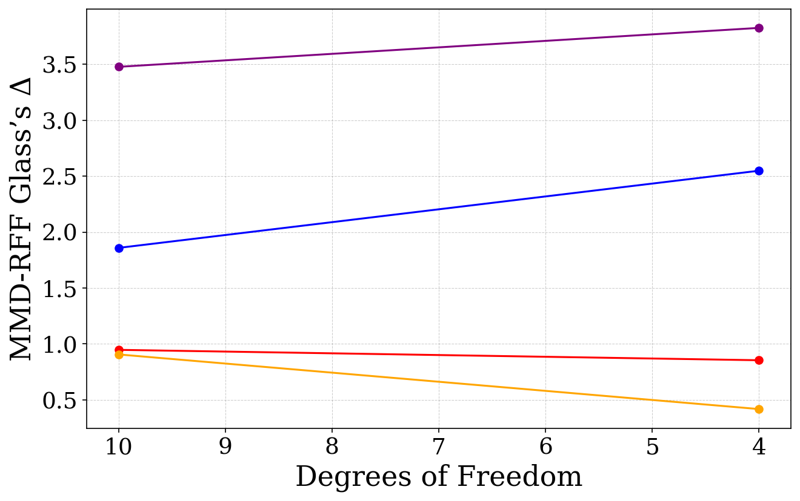
Glass’s Δ table
| Sampler | Varying | MCMC Mean | IID Mean | IID Std | Glass’s Δ |
|---|---|---|---|---|---|
| DEMetro_Z | 4 | 0.029 | 0.012 | 0.005 | 3.826 |
| DEMetro_Z | 10 | 0.032 | 0.013 | 0.006 | 3.478 |
| Metro | 4 | 0.024 | 0.012 | 0.005 | 2.549 |
| Metro | 10 | 0.023 | 0.013 | 0.006 | 1.859 |
| HMC | 4 | 0.016 | 0.012 | 0.005 | 0.854 |
| HMC | 10 | 0.018 | 0.013 | 0.006 | 0.947 |
| SMC | 4 | 0.014 | 0.012 | 0.005 | 0.417 |
| SMC | 10 | 0.018 | 0.013 | 0.006 | 0.906 |
Runtime
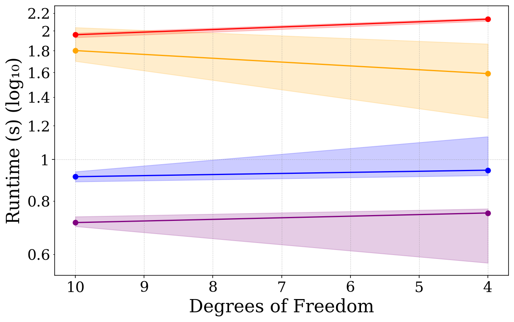
Runtime (scatter)
Ess
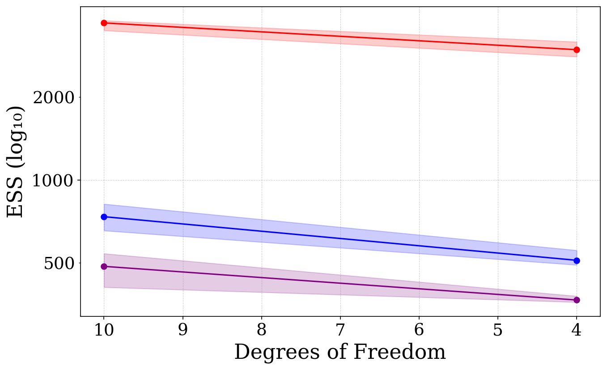
Ess (scatter)
Ess Per Sec
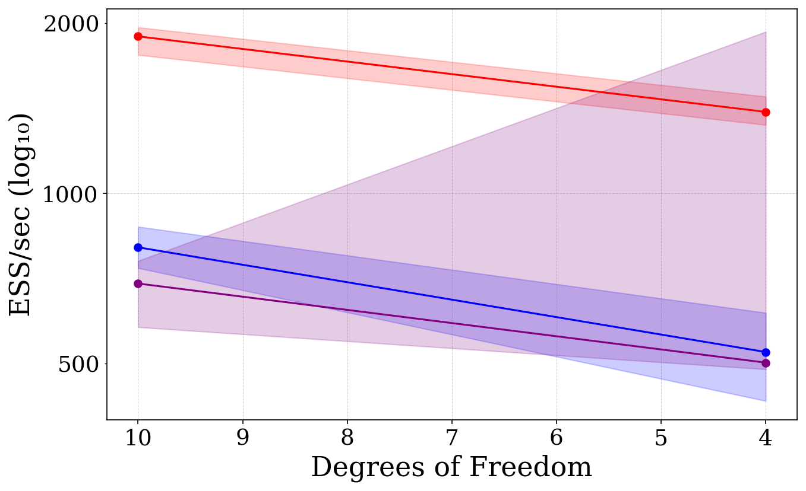
Ess Per Sec (scatter)
R Hat

Mode Transitions
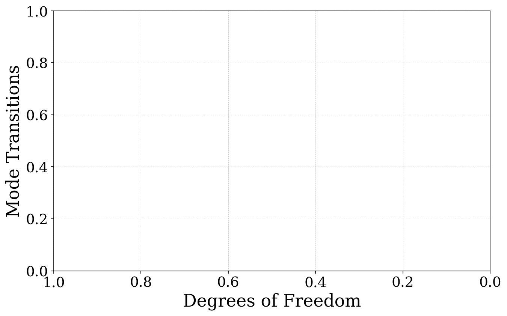
KDE + Init Plots
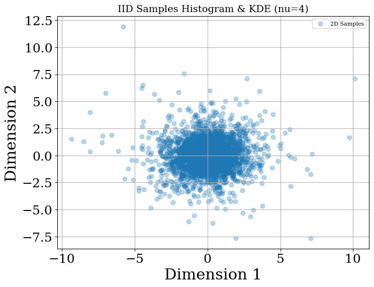
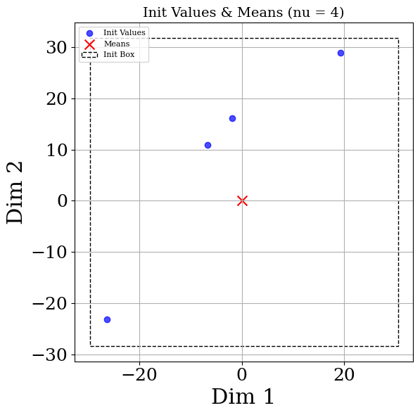
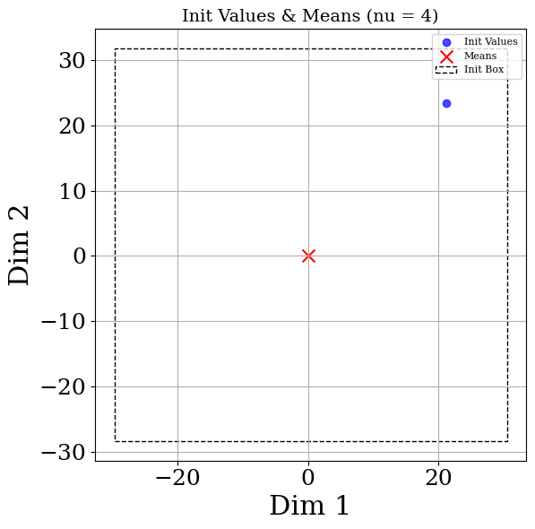
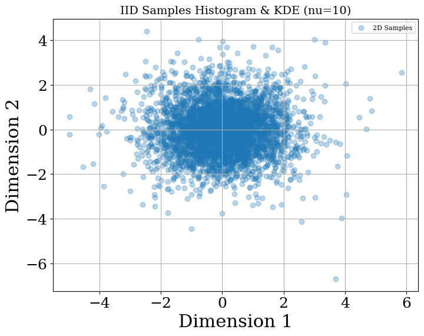
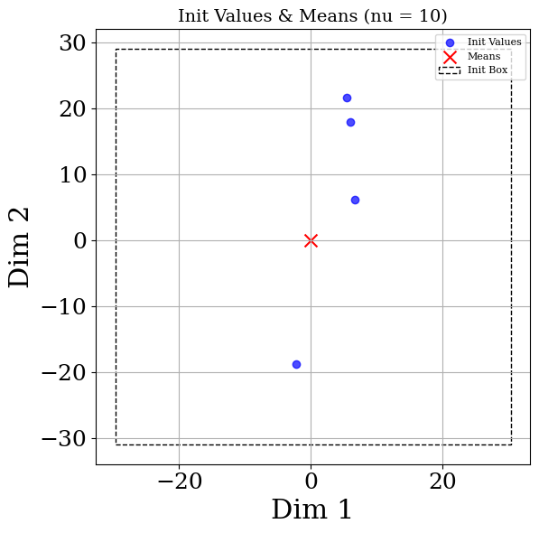

Forest & Ridge Plots
Pooled
4
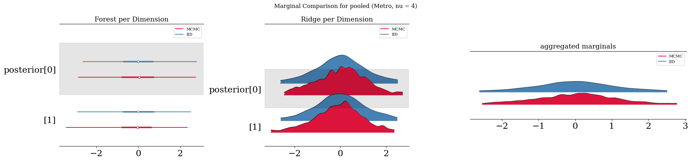
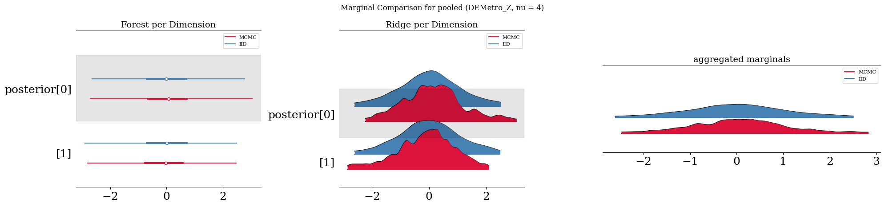
10
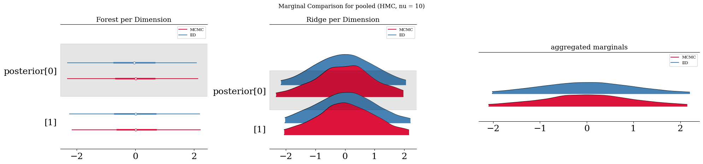
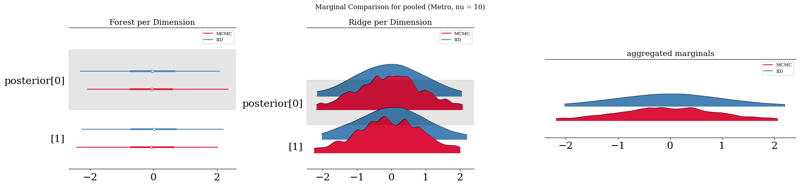
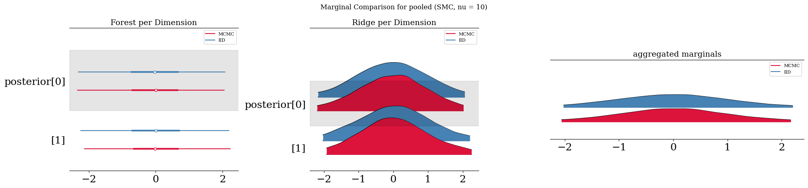
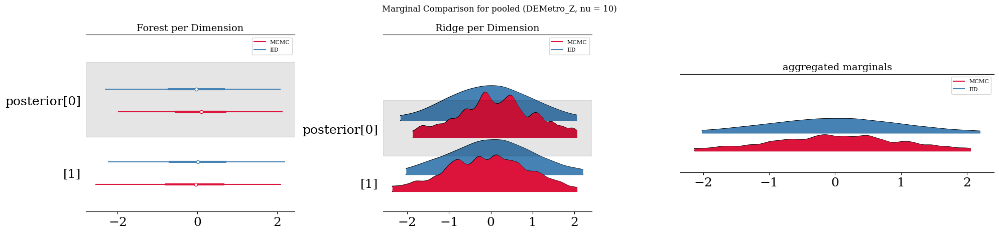
Chain
4
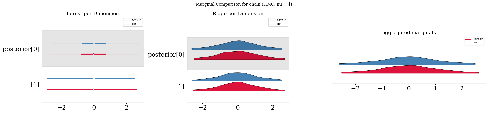
 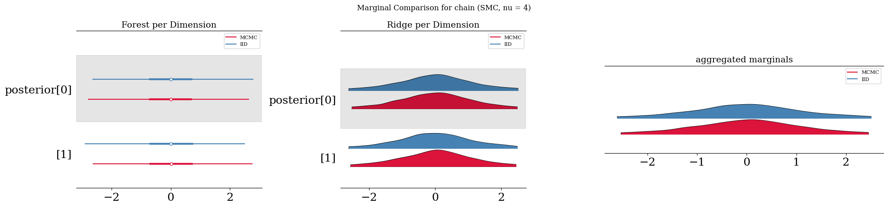
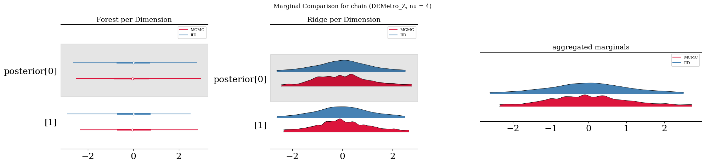
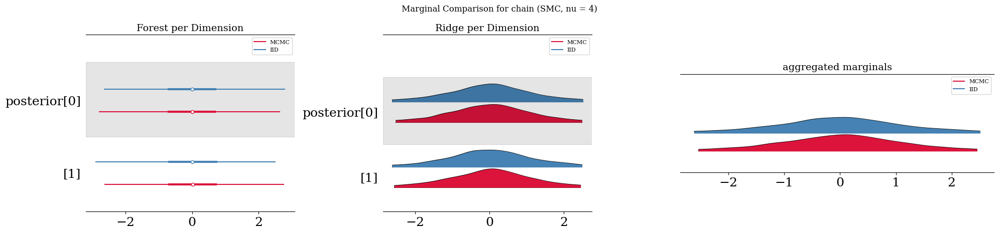
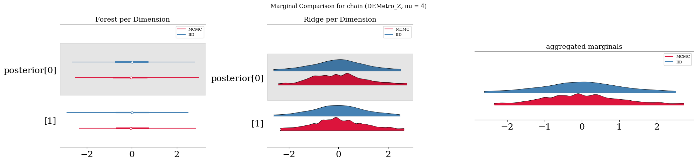
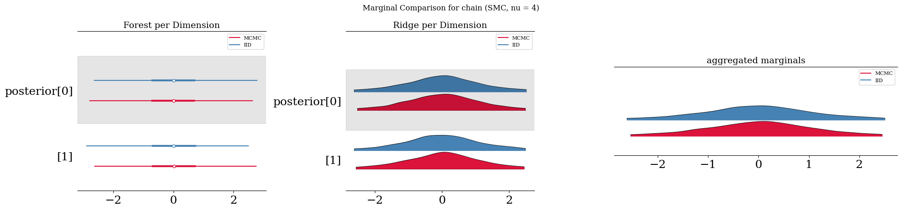
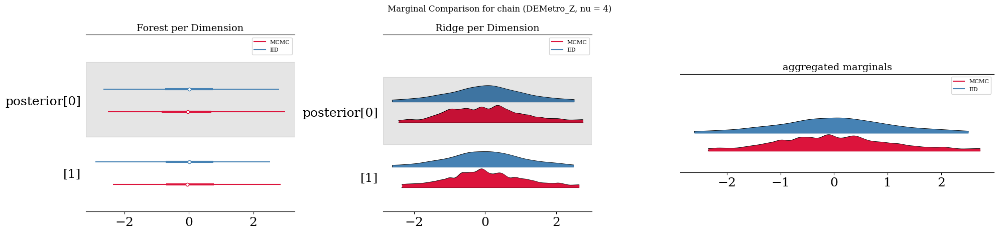
10
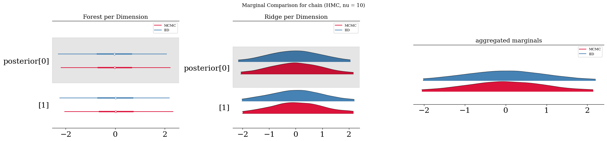
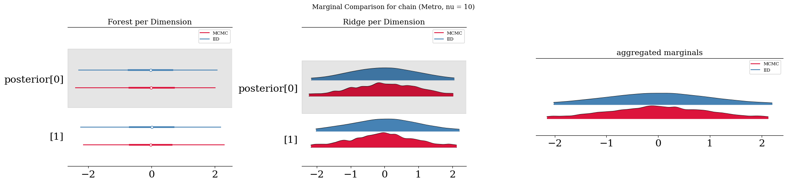
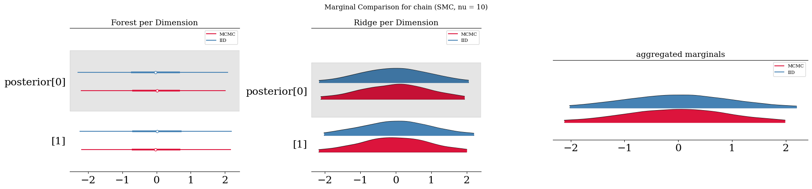
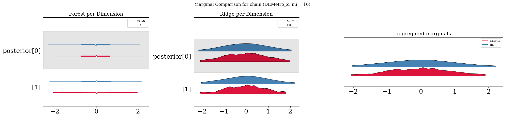
Pairwise Scatter Plots
Pooled
4
10
Chain
4
10